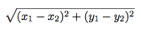
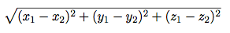

Practice problems: Functions and Expressions
Question 1: Distance
Implement a function called distance(x1, y1, x2, y2):
x1andy1form an x-y coordinate pairx2andy2form an x-y coordinate pair
distance returns the Euclidean distance between the two points. Use the
following formula:

import sqrt
def distance(x1, y1, x2, y2):
"""Calculates the Euclidian distance between two points (x1, y1) and (x2, y2)
>>> distance(1, 1, 1, 2)
1.0
>>> distance(1, 3, 1, 1)
2.0
>>> distance(1, 2, 3, 4)
2.8284271247461903
"""
"*** YOUR CODE HERE ***"
return sqrt(square(x1-x2) + square(y1-y2))Question 2: Distance (3-D)
Now, let us edit this program to get the distance between two
3-dimensional coordinates. Your distance3d function should take six
arguments and compute the following:

def distance3d(x1, y1, z1, x2, y2, z2):
"""Calculates the 3D Euclidian distance between two points (x1, y1, z1) and
(x2, y2, z2).
>>> distance3d(1, 1, 1, 1, 2, 1)
1.0
>>> distance3d(2, 3, 5, 5, 8, 3)
6.164414002968976
"""
"*** YOUR CODE HERE ***"
return sqrt(square(x1-x2) + square(y1-y2) + square(z1-z2))Question 3
Implement harmonic, which returns the harmonic mean of two positive numbers
x and y. The harmonic mean of 2 numbers is 2 divided by the sum of the
reciprocals of the numbers. (The reciprocal of x is 1/x.)
def harmonic(x, y):
"""Return the harmonic mean of x and y.
>>> harmonic(2, 6)
3.0
>>> harmonic(1, 1)
1.0
>>> harmonic(2.5, 7.5)
3.75
>>> harmonic(4, 12)
6.0
"""
"*** YOUR CODE HERE ***"
return 2/(1/x + 1/y)Question 4: Environment diagrams
If you haven't found this gem already, tutor.composingprograms.com has a great visualization tool for environment diagrams. Paste in your Python code and it will generate an environment diagram you can walk through step-by-step! Use it to help you check your answers!
Try drawing environment diagrams for the following examples and predicting what Python will output:
>>> def square(x):
... return x * x
>>> def double(x):
... return x + x
>>> a = square(double(4))
>>> a
______64>>> x, y = 4, 3
>>> def reassign(arg1, arg2):
... x = arg1
... y = arg2
>>> reassign(5, 6)
>>> x
______4
>>> y
______3>>> def f(x):
... f(x)
>>> print, f = f, print
>>> a = f(4)
______4
>>> a
______# Nothing shows up, because a = None
>>> b = print(4)
______4
>>> b
______# Nothing shows up, because b = None